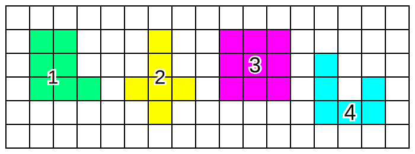
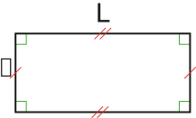
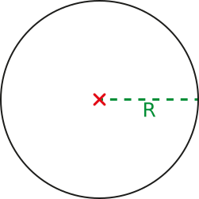

$\mathscr{A}=c\times c=c²$
$\mathscr{A}=L\times \mathscr{l}$

| Chapitre 15 | - Aires |
Activité Introduction
Tableau de conversion :
| 2,7 hm² = 2 700 000 dm² | 5 cm² = 0,00 000 5 dam² |
Attention, toutes les longueurs doivent être exprimés avec la même unité (ou sous unité).
| Carré de côté c. $\mathscr{A}=c\times c=c²$ |
Rectangle de longueur L et largeur 𝓁. $\mathscr{A}=L\times \mathscr{l}$ |
|
 |
Exemple :
L'aire d'un carré de côté 6cm est $\mathscr{A}=6\times6 = 36 cm²$.
| Dans un triangle rectangle $\mathscr{A}=\frac{a\times b}{2}$ |
Dans un triangle quelconque $\mathscr{A}=\frac{Base\times Hauteur}{2}$ |
 |
 |
Exemple :
L'aire d'un triangle rectangle dont les côtés de l'angle droit mesurent 6cm et 8cm est $\mathscr{A}=\frac{6\times8}{2}=\frac{48}{2}=24 cm²$.
| Avec un rayon R $\mathscr{A}=\pi \times r²$ |
Avec un diamètre D |
|  | Il faut calculer le rayon (en divisant par 2) et utiliser la formule précédente. |
Exemple :
L'aire d'un cercle de rayon 5cm est $\mathscr{A}=\pi\times5²=25\pi \approx 78,5 cm²$.